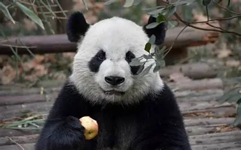
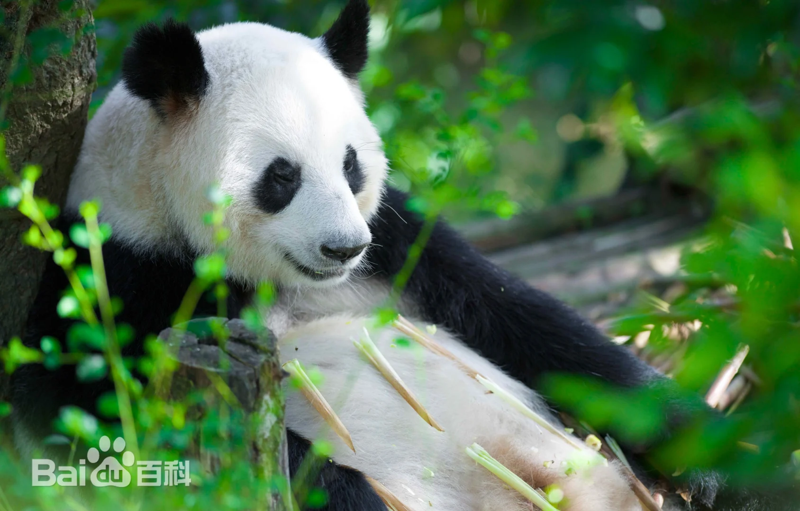
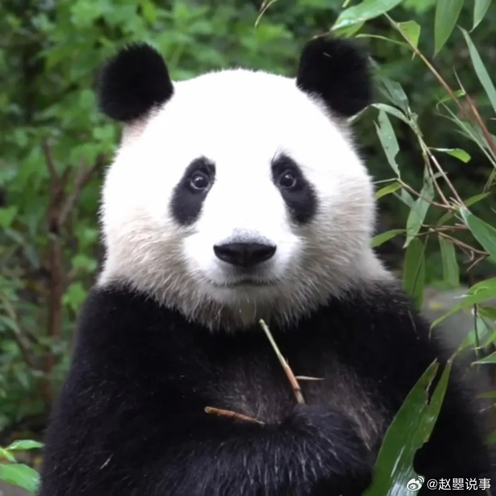

家族成员
父亲

美兰
谱系号649，出生在美国亚特兰大动物园，是旅美大熊猫“伦伦”和“洋洋”的第一个宝宝。12月15日，迎来出生第100天，经大众网络投票，得名“美兰”，寓意“亚特兰大之美”。头圆、蓬蓬脸、毛色黑白分明，全身散发着温文尔雅气质。
母亲

成功
谱系号522，别名“洁癖公主”“功麻”。出生于成都大熊猫繁育研究基地，母亲为成成，父亲为科比，与妹妹成绩系跨夜双胞胎，以肩带中间断开、后腿有白色毛发竖线为显著特征，共生养9只幼崽（功仔、和琪、和美、和兴、和盛、和风、和雨、和花、和叶）。
双胞胎妹妹

和叶
谱系号1238，体貌特征包括鼻部黑色竖线、细窄肩带及长睫毛，成为个体识别标志，从小活泼好动。出生时因性别特征不明显被误判为雄性，2024年1月经专家生物样本检测确认为雌性。